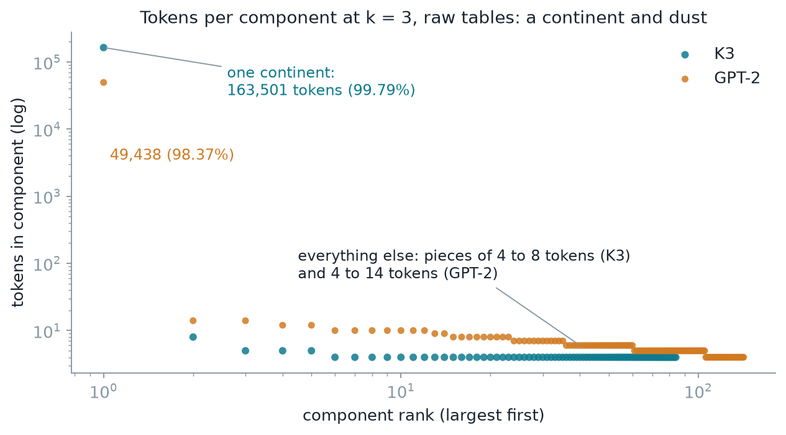
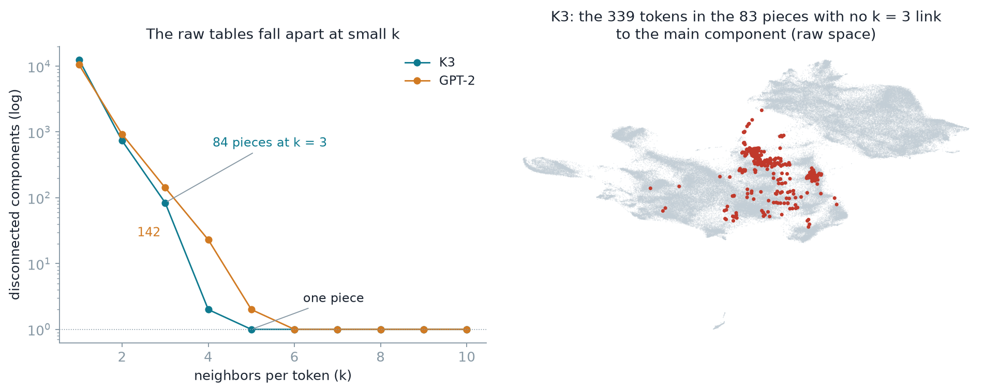
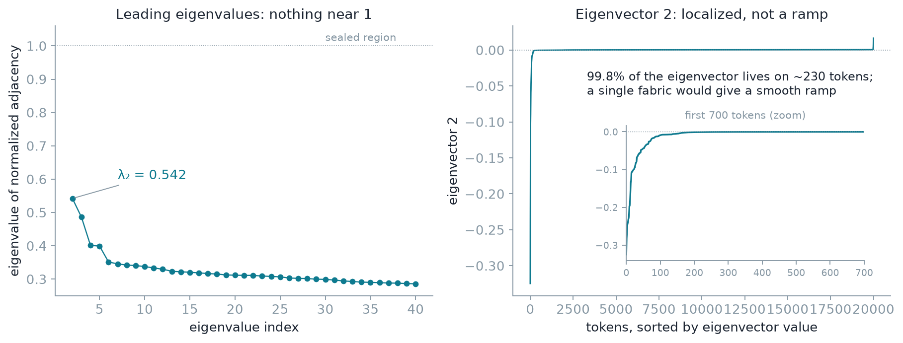
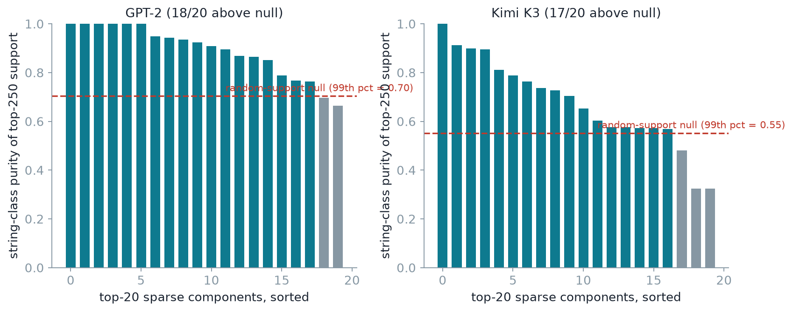
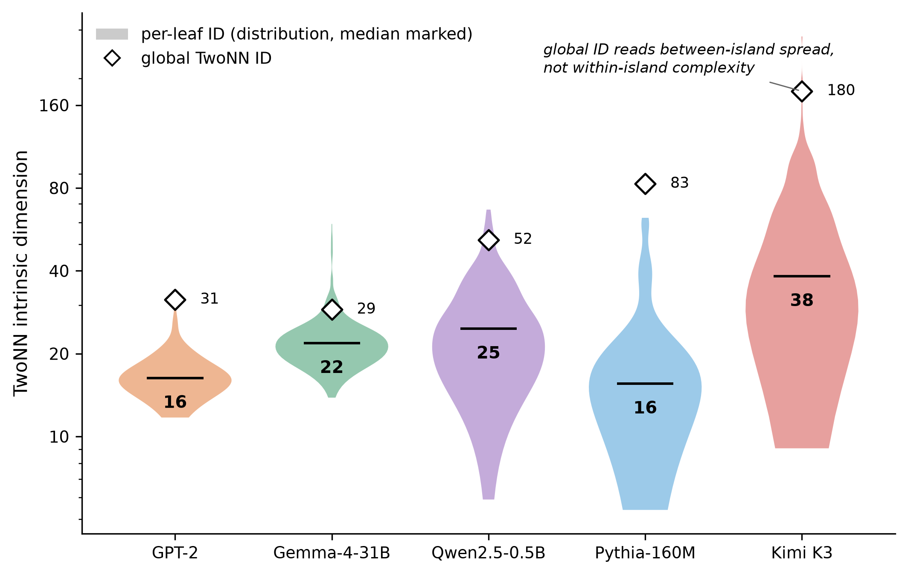

This post is about the geometry of a language model’s token-embedding table, measured for five models from GPT-2 to the 2.8-trillion-parameter Kimi K3. Three findings. First, a vocabulary is not a single manifold: it is an archipelago, islands of tokens (word families, scripts, code, numbers) with real space between them, and we verify the islands directly, through graph connectivity, spectral structure, and their semantic coherence. Second, because of that structure, the intrinsic dimension the literature reports is inflated by construction: the standard TwoNN estimator assumes one manifold, and on a mixture it measures how the islands are arranged rather than the shape of anything a token lives on, overstating the global number by a factor of 2 to 5 in every model and mis-sizing every instrument tuned by it. Third, we propose the fix, measuring inside islands, and the honest numbers tell a different story: the local dimension tracks token frequency rather than model scale, and its median barely moves from 15.5 in a 160M-parameter model to 38 in the 2.8-trillion-parameter K3, while the global estimate swings from 29 to 180.
The lookup table and the number everyone reports¶
Every language model begins with a lookup table: one vector per token in its vocabulary. For GPT-2 that is 50,257 vectors in 768 dimensions; for Kimi K3, the largest open-weight model released to date, it is 163,840 vectors in 7,168 dimensions. This table is where every input enters the network. In weight-tied architectures, where the same matrix also scores the output logits, it is the frame in which the output distribution is computed as well. In this study, three of the five models tie (GPT-2, Qwen, Gemma), two do not (Pythia, K3). It is also a complete object: every token is there, with no sampling and no inference required, which makes it one of the few parts of a frontier model you can study exhaustively on a laptop.
Despite this importance, the embedding table is rarely studied as an object in its own right. The field’s attention goes to the residual stream, to activations, and to the weights, the home ground of mechanistic interpretability, and the table mostly appears as a preprocessing detail. I have a strong conviction, which a series of experiments and articles here will put to the test: there is life in the token embedding, geometry of its own, formed by training and carried into the network: a structured substrate that the rest of the model receives and manipulates along the residual stream. This first post establishes the most basic fact about that geometry: its shape.
A natural first question about any cloud of points is how many dimensions it really uses. Not the ambient count of 768 or 7,168 columns, but the intrinsic dimension: how many coordinates you would need to describe where a point can actually be. This question is important because whatever you do with an embedding table next, whether you reduce it, cluster it, chart it, probe it, or compress it, you will pick ranks, neighborhood sizes, and model capacities based on some belief about its dimension. The literature answers with single numbers, “the intrinsic dimension of the representation is about d,” because the default assumption is the manifold hypothesis [Fefferman et al., 2016]: that the tokens live on one lower-dimensional manifold. A few papers have questioned that default, proposing a union of disjoint manifolds of varying dimension for image data [Brown et al., 2023], or showing that token embeddings fail statistical tests of the manifold hypothesis altogether [Robinson et al., 2025].
We asked this question across five models spanning three orders of magnitude: GPT-2 (124M), Pythia-160M, Qwen2.5-0.5B, Gemma-4-31B, and Kimi K3 (2.8T). The answers looked bizarre from the start. Pythia, a small model, measured 83. K3 measured 180. Gemma, three hundred times larger than Pythia, measured 29. Nothing about model scale, architecture, or training data explains this ordering.
How dimension is measured, and the assumption everyone forgets¶
The most common estimator for intrinsic dimension is TwoNN [Facco et al., 2017]. The idea is elegant. For each point, take the distance to its nearest neighbor and to its second-nearest neighbor. On a d-dimensional manifold, the ratio of these two distances follows a known distribution that depends only on d, so from the ratios across many points you can read the dimension directly, without ever building a global model of the data. It is fast, it has no bandwidth to tune, and it is everywhere in the representation-geometry literature, from studies of deep representations [Ansuini et al., 2019] to the estimator surveys [Bi and Lafaye de Micheaux, 2025].
It also carries an assumption stated in the original paper and forgotten in most applications: the points should locally look like samples from one manifold with slowly varying density. Each point’s two nearest neighbors should be neighbors in the honest sense, nearby points of the same structure.
What I found is that a token vocabulary is nothing like that. It is a federation of very different populations: inflected word families, code fragments, numbers, punctuation, several scripts, byte-level debris. These populations form separate clusters with real space between them. For tokens near a cluster’s edge, the nearest neighbor may be a genuine neighbor while the second-nearest sits across a gap in another cluster entirely. That inter-cluster distance enters the ratio statistic as if it were a local measurement. The estimator has no way to know its premise is broken, so it converts “my second neighbor is far away, across a gap” into “I must live in a very high-dimensional space.”
You can watch the artifact happen in miniature. The widget below holds the two ingredients every real vocabulary has: a set of flat, two-dimensional islands, and a population of isolated tokens scattered between them in a high-dimensional ambient space (512 dimensions here; think of the rare-token debris in the long tail of any vocabulary). The slider adds debris. No island ever changes, and each island’s own TwoNN stays at 2. The global estimate more than doubles, because every isolated token’s two nearest neighbors sit across between-island distances, and high dimension makes those distances nearly equal, which the estimator reads as high dimension.
So the global number stops measuring the shape of anything a token lives on and starts measuring how the clusters are spread relative to each other. We call this the mixture artifact.
How we know the islands are real¶
Everything so far assumes the vocabulary really is split into separated clusters, and that assumption is not necessarily trivial. The inflated global number cannot serve as its own evidence: TwoNN also misreads data with strong density variation or strong curvature, and neither of those involves clusters. So we need checks that do not use the estimator at all. There are three.
The two graph checks share one construction, so here it is once. Work directly in the raw table: each token is its full row, all 7,168 coordinates for K3, and distance is plain Euclidean distance between rows. Connect each token to its k nearest neighbors; a link stands if either token lists the other. The first check asks whether this network is in one piece. The second asks how easily a random walk moves through it, and runs on a random 20,000-token subsample of K3 to keep the eigenvalue computation light.
You can run this construction live before seeing the real numbers. The widget below builds the neighbor network of a small toy vocabulary, eight islands plus scattered rare tokens, and lets you drag k.
The network falls into pieces. If the vocabulary were one connected fabric, you could reach any token from any other by hopping between neighbors, for any reasonable k. Instead, at k = 3, K3’s network breaks into 84 disconnected components; GPT-2’s breaks into 142. The distribution of tokens per component is a continent and dust: K3’s largest piece holds 163,501 tokens, 99.79 percent of the vocabulary, and the other 83 pieces hold 4 to 8 tokens each, 339 tokens in total. GPT-2 reads the same way, a 98.4 percent continent plus 141 pieces of 4 to 14 tokens. A disconnected component is the strictest possible meaning of “separate clusters with real space between them”: a group of tokens with no neighbor links to the rest of the vocabulary at all, at that scale. The scale also works against the estimator: TwoNN consults each token’s first and second neighbors only, a radius below even k = 3, so it operates precisely where the vocabulary is most fragmented. Raising k stitches the pieces together with thin bridges: K3 is down to two components at k = 4 and one at k = 5; GPT-2 holds out to k = 6.

Decoding the sealed components makes them concrete. K3’s islands are
families of variants of one word. The largest holds the eight case and
spacing variants of though and although; others hold the variants of
different, something, female, purple, or the inflections of one
verb: behave / behaves / behaved / behaving, convey / conveyed /
conveys / conveying. Tokens the tokenizer minted as near-duplicates of
one string, parked together in a tight cluster with no neighbor links to
anything else.

The second check asks a different question of the same network: not whether it is in one piece, but how easily a random walker that hops between neighboring tokens moves around it. This one can also be tried on the toy first. The widget below releases such a walker on two toy networks: a single connected fabric, and islands joined by thin bridges. On the fabric the walker spreads everywhere; on the islands it stays trapped for a long time behind the bridges. The two readouts the widget shows, the second eigenvalue λ₂ and the sorted eigenvector in the right panel, are exactly the measurements the real analysis below relies on.
The random walk finds the same islands, and measures their bridges. By k = 5 the network is connected, so counting pieces says nothing more, and the walk question takes over: on a k = 10 neighbor graph over the 20,000-token subsample, how easily does a random walk move around? The eigenvalues of the network’s normalized adjacency matrix measure exactly this: values near 1 mean there are regions a walk enters and almost never leaves. In the raw table, K3’s second eigenvalue is 0.542, so at this scale no region is close to sealed; the bridges that appear between k = 3 and k = 5 are wide enough to walk across. What still separates islands from fabric is the shape of the eigenvectors. On one connected surface they are smooth ramps, varying gradually across the whole dataset. On a network of communities they are localized: nearly all of the eigenvector sits on one small group of tokens and is flat everywhere else. Ours are localized: 99.8 percent of eigenvector 2 lives on about 230 of the 20,000 tokens (right panel below). The islands are written in the walk’s geometry even where the walk is no longer trapped.

The islands are recognizable kinds of tokens. A clustering algorithm will happily cut a featureless cloud into arbitrary pieces, so the last check asks whether the groups the table defines correspond to anything a human would recognize. It has two steps, one blind and one deliberately simple.
The blind step groups tokens by geometry alone. Dictionary learning finds a small set of directions in the table such that each token’s vector is well approximated by a combination of only a few of them. Each direction then comes with a natural group, the 250 tokens that use it most strongly. Nothing in this step sees spelling. It works on the vectors and nothing else.
The simple step tries to name those groups using spelling alone. There are four rules. A token can be pure punctuation, like “)).,”; pure digits, like “2019”; written entirely in one script, say a run of Cyrillic; or a variant of one suffix, like “ARD / ard / ards”. For each group, each rule captures some share of the 250 tokens, and the group’s score is the largest of those four shares. A group that really is a family scores near 1: in one GPT-2 group almost every token is pure punctuation, so the punctuation rule captures almost all of it. A random collection of 250 tokens does not score zero, though, because any vocabulary is full of digits and punctuation to begin with. So the bar is calibrated instead of guessed: draw 1,000 groups of 250 tokens at random, score them the same way, and call a real group recognizable only if it beats the 99th percentile of those random scores.
On GPT-2, 18 of the 20 strongest directions clear that bar; on K3, 17 of 20. The groups the table defines by geometry alone are, almost every time, groups a reader can name: punctuation strata like “)).,”, digit tokens, script blocks, suffix families like “ARD / ard / ards”.

The fix to TwoNN: measure inside coherent patches¶
Once the structure of the embedding table has been validated, the fix to the TwoNN is almost obvious: measure inside coherent patches, and never across them. We partition each table with a random-projection tree, a data-adaptive splitting that produces leaves of a few hundred tokens (64 leaves for GPT-2, up to 256 for K3); RP-trees assume nothing about what the clusters are and simply cut where the data is wide. TwoNN then runs twice on the same table: once globally, which is the standard procedure, and once inside each leaf, where the single-structure assumption has a chance of holding. The gap between the two readings is the measurement.
Results are stable to the partition seed, and leaf sizes of a few hundred tokens keep TwoNN well above its small-sample regime while staying below the scale where leaves themselves become mixtures. The per-leaf estimator inherits TwoNN’s remaining assumptions (approximate local uniformity within a leaf), so leaf values should be read as well-founded estimates rather than exact truths. What carries the finding is the gap between the leaf distribution and the global number, and that gap dwarfs any within-leaf estimation error.
The five embedding tables were extracted directly from released weights. For K3 that deserves a sentence, because it sounds implausible to run on a laptop. The table is a single named tensor in one safetensors shard, and the format’s header gives byte offsets per tensor, so you can pull 2.3 GB out of a multi-terabyte model release and never load, let alone run, the model itself.
The result¶
Here is the comparison across all five models:
| Model | Global TwoNN | Median leaf (local) | Overstatement |
|---|---|---|---|
| GPT-2 (124M) | 31 | 16.3 | ~2× |
| Pythia-160M | 83 | 15.5 | ~5× |
| Qwen2.5-0.5B | 52 | 24.6 | ~2× |
| Gemma-4-31B | 29 | 21.8 | ~1.3× |
| Kimi K3 (2.8T) | 180 | 38.2 | ~5× |

Two readings of this figure matter.
First, the size of the gap. K3’s global estimate is 180, but the median leaf reads 38. Pythia reads 83 globally and 15.5 locally. These are not refinements of a roughly-correct number. The global estimate is not a property of the typical data. It is a property of the mixture. Note: the leaf distribution does have an upper tail, visible in the violins: a minority of K3 leaves read into the low hundreds. Those are the debris-heavy cells, in which even the local estimator inherits the concentration effect the widget demonstrates, and they are the exception that explains itself.
Second, the resolution of the bizarre cross-model ordering. Pythia and K3, the two models with the most inflated global numbers, are the two whose embedding clouds are most isotropic. Measured as the mean pairwise cosine between normalized rows, both sit at 0.004, against 0.27 for GPT-2’s strongly cone-shaped cloud, 0.15 for Qwen and 0.03 for Gemma; this kind of anisotropy, a shared direction that dominates every vector, is well documented in language-model representations [Ethayarajh, 2019; Timkey & van Schijndel, 2021]. In an isotropic cloud the clusters are spread over many directions, so the between-cluster geometry contributes many effective dimensions to the artifact. Gemma’s mild 1.3× overstatement reflects a more compactly organized vocabulary, not a simpler one. Separate “how complex are the islands” from “how are the islands arranged” and each model’s numbers become interpretable. The island complexities (16 to 38) vary far less across three orders of magnitude of scale than the global numbers (29 to 180) ever suggested.
Why it matters¶
Intrinsic dimension is not a decorative statistic. Published estimates of it steer real decisions: how many components to keep, how small an adaptation of a language model can afford to be [Aghajanyan et al., 2021], whether one representation is “simpler” than another [Ansuini et al., 2019]. Such comparisons are increasingly common for language models, with TwoNN itself the standard instrument for tracking dimension across transformer layers [Valeriani et al., 2023], and for token-embedding tables this result says the number they rest on is an artifact: off by a factor of 2 to 5, in a direction and with a cross-model ordering that mislead exactly the conclusions people want to draw from it. The estimator’s validity conditions were stated in its original paper, but it does not surprise me that people apply the recipe without reading the hypothesis. Two consequences follow that we have measured directly.
Everything sized by the global number is mis-sized. Chart dimensions, PCA truncations, kernel bandwidths, probe capacities: the global estimate is the number people reach for, and it is off by up to 5×. And too many dimensions are not a harmless surplus. Every dimension beyond what the data supports is room for noise: a probe or kernel budgeted at 180 dimensions has over a hundred directions in which to fit sampling accidents that the 38-dimensional structure never produced. Worse, neighbor-based machinery degrades outright as dimensions accumulate, because distances concentrate and the contrast between the nearest and the farthest neighbor collapses [Beyer et al., 1999]. We hit this concretely on K3: estimating each token’s dimension from its own nearest-neighbor ball in the full table returns values that saturate around 500, a number with no geometric meaning, while the same estimator confined to coherent cells reads 38.
At frontier scale, naive neighborhoods are mixtures too. In K3’s table, a token’s nearest-neighbor ball routinely spans several islands, so any “local” quantity computed in it (density, dimension, curvature) inherits the same artifact at small scale.
There is also something positive hiding in the per-leaf profile. Once you measure dimension where it is actually defined, it stops being noise and becomes a field with structure. Leaf dimension correlates with token frequency, negatively, in all five models (Spearman −0.27 to −0.56). Rare tokens live in measurably higher-dimensional neighborhoods than frequent ones. That law, its echo in the models’ activations, and the training dynamics that produce it are measured results in their own right. This will deserve a full article on its own soon.
The practical summary fits in one line: a token vocabulary is an archipelago, not a manifold, and a dimension is only worth quoting if you can say which island it was measured on.
References¶
- Aghajanyan, A., Zettlemoyer, L., and Gupta, S. (2021). Intrinsic Dimensionality Explains the Effectiveness of Language Model Fine-Tuning. ACL 2021. arXiv:2012.13255
- Ansuini, A., Laio, A., Macke, J. H., and Zoccolan, D. (2019). Intrinsic dimension of data representations in deep neural networks. NeurIPS 2019. arXiv:1905.12784
- Beyer, K., Goldstein, J., Ramakrishnan, R., and Shaft, U. (1999). When Is “Nearest Neighbor” Meaningful? ICDT 1999. DOI
- Bi, Z., and Lafaye de Micheaux, P. (2025). A Survey and Comparative Evaluation of Intrinsic Dimension Estimators under the Manifold Hypothesis. arXiv:2509.15517
- Brown, B., Caterini, A. L., Ross, B. L., Cresswell, J. C., and Loaiza-Ganem, G. (2023). Verifying the Union of Manifolds Hypothesis for Image Data. ICLR 2023. arXiv:2207.02862
- Ethayarajh, K. (2019). How Contextual are Contextualized Word Representations? Comparing the Geometry of BERT, ELMo, and GPT-2 Embeddings. EMNLP 2019. arXiv:1909.00512
- Facco, E., d’Errico, M., Rodriguez, A., and Laio, A. (2017). Estimating the intrinsic dimension of datasets by a minimal neighborhood information. Scientific Reports 7, 12140. Nature
- Fefferman, C., Mitter, S., and Narayanan, H. (2016). Testing the manifold hypothesis. Journal of the American Mathematical Society 29(4), 983-1049. arXiv:1310.0425
- Robinson, M., Dey, S., and Chiang, T. (2025). Token embeddings violate the manifold hypothesis. arXiv:2504.01002
- Timkey, W., and van Schijndel, M. (2021). All Bark and No Bite: Rogue Dimensions in Transformer Language Models Obscure Representational Quality. EMNLP 2021. arXiv:2109.04404
- Valeriani, L., Doimo, D., Cuturello, F., Laio, A., Ansuini, A., and Cazzaniga, A. (2023). The geometry of hidden representations of large transformer models. NeurIPS 2023. arXiv:2302.00294